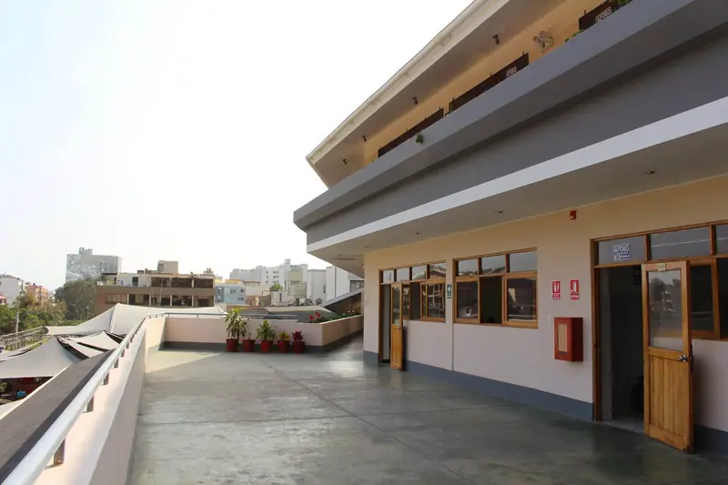
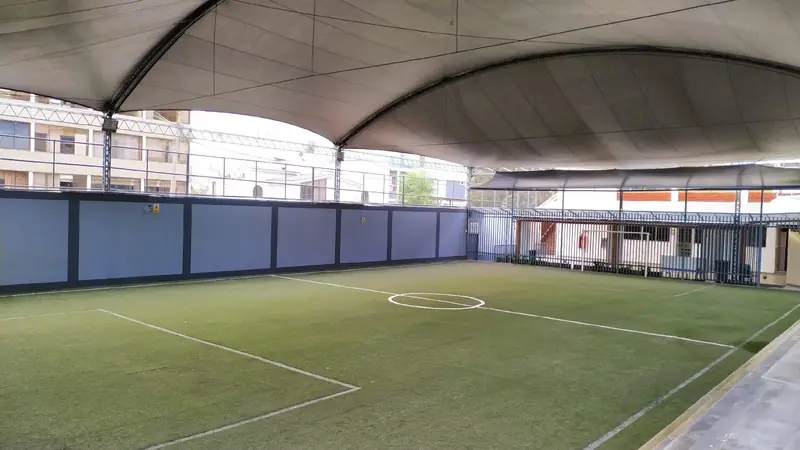
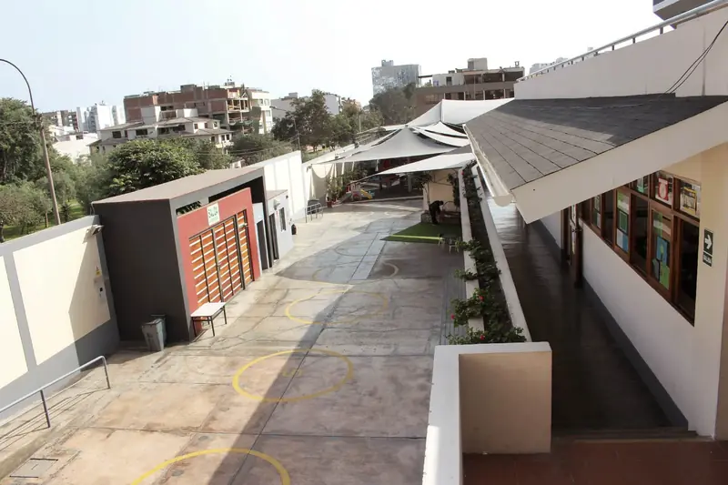
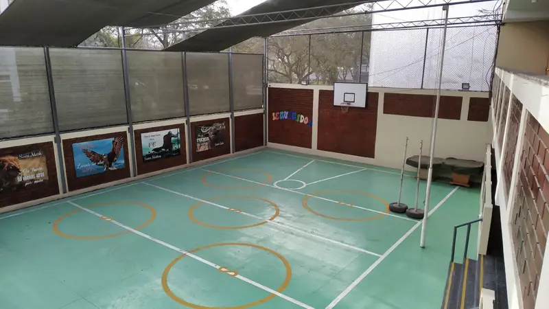

Nosotros
Monterrico Christian School ofrece un servicio educativo bilingüe y de calidad a estudiantes desde inicial de tres años hasta el quinto grado de secundaria. La formación académica va de la mano con la enseñanza de valores cristianos.
Desde el año 2001 existimos para educar a estudiantes para la gloria de Dios y buscando la excelencia en todo aspecto.
El enfoque para alcanzar este objetivo es la palabra de Dios, la cual es provechosa para enseñar, disciplinar, corregir e instruir en justicia.

Nuestra historia
La Institución Educativa «Monterrico Christian School» se inicia bajo la promotoría de la Asociación Iglesia Bautista Vida Nueva en Cristo de Monterrico, cuyo deseo fue fundar una escuela con axiología bibliocéntrica, y cuyo fin pedagógico sea «Colaborar en la formación de vidas íntegras» basados en la palabra de Dios.
Es así que se funda inicialmente el «Colegio Cristiano Vida Nueva» con Resolución Ministerial N.° 3370 del año 2001 y posteriormente cambia de nombre a «Monterrico Christian School» debido al proyecto educativo institucional que adopta el Programa de Inmersión (Immersion English Program) en los niveles de inicial y primaria y bilingüe en el nivel de secundaria.

Misión y visión
Misión
Monterrico Christian School existe para glorificar a Dios a través de la educación, colaborando en la formación de vidas íntegras, para el servicio a Dios y la sociedad.
Visión
Impactar espiritualmente y académicamente a la sociedad, al país y el mundo para la gloria de Dios a través de nuestros estudiantes.

Colaborando en la formación de vidas íntegras
Bienvenidos a la página web de Monterrico Christian School. Confío que les brindaré información útil acerca de MCS. Nuestro propósito es educar a los estudiantes para la gloria de Dios al llevarlos a una comprensión adecuada de Dios, de ellos mismos y del mundo que Él ha creado.
Desde su fundación en 2001, MCS se ha enfocado en educar a todos sus estudiantes buscando la excelencia en todos los aspectos de una educación integral. Es decir, tanto en el aspecto cognitivo, emocional, social, así como en el espiritual. Este último implica necesariamente la transmisión de la verdad que involucra la mente, toca el corazón y evoca una respuesta resonante de servicio. Tal conocimiento alienta el pensamiento cohesivo y da forma al carácter piadoso al establecer una cosmovisión cristiana consistente que está anclada en la obra creadora, sustentadora y redentora de Jesucristo. Nuestro objetivo implica que nuestros estudiantes sean sal y luz en sus diversas vocaciones al vivir vidas que desafíen la cultura prevaleciente y traigan gloria al Señor Jesucristo al servirle bien en todo momento.
Al frente de este esfuerzo hay un grupo de profesionales capaz, comprometido y cristiano, que alienta a nuestros estudiantes a pensar críticamente a través de una currícula rigurosa. Nuestros maestros se esfuerzan por ayudar a cada estudiante a ser un buen y fiel servidor de Dios al pensar como Él lo hace e interpretar y desarrollar correctamente la creación de Dios para su gloria de acuerdo con su palabra. El apoyo de los padres que constantemente transmiten conocimiento bíblico en el hogar es una parte indispensable del esfuerzo educativo de MCS.
Por la gracia de Dios, MCS tiene una historia sólida y espera un futuro prometedor. Lo invito a conocer más sobre nosotros a través de nuestro sitio web o a programar una visita guiada a nuestro campus.
Dios le bendiga,
Lic. Irma Villacorta AlvarezDirectora Nacional
Instruye al niño en su camino y aun cuando fuere viejo no se apartará de él.
Proverbios 22:6







